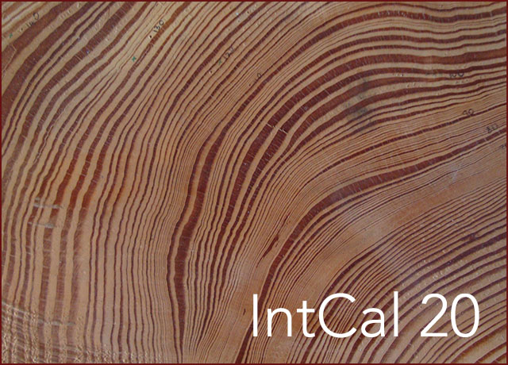

Web interface build number:
(c) Christopher Bronk Ramsey
If you use this program, you should quote the reference for the calibration curve used, the version of OxCal (with any non-standard options set) and the reference Bronk Ramsey 2009a. If you are wiggle-matching tree-ring sequences you should quote Bronk Ramsey et al. 2001. For deposition models Bronk Ramsey 2008 should be referenced, together with Bronk Ramsey and Lee 2013 for variable k, and for outlier analysis Bronk Ramsey 2009b. For use of trapezoidal priors please quote Lee and Bronk Ramsey 2012. Finally for KDE plots and models use the reference for Bronk Ramsey 2017.
OxCal is a program designed for the analysis of chronological information.
The capabilities of the program can be divided into two main categories:When you first call up the OxCal site you will be prompted for a username and password. If you do not already have one, press [New User] and fill in your initials, surname and email address. A password will be emailed to you. See the installation instructions for more details.
Once you have entered your email and password you will be presented with a dialog offering you four options:
At any later stage the same operations can be done using either the [File > New], [File > Open] or the [Calibrate] button from the top menu.
The program is designed in a modular way for maximum flexibility. There are two main elements.
You can switch between the different windows in three ways:
Each window has three control buttons. These are for:
Windows can be resized by dragging the bottom right corner of the window.
The Bayesian analysis part of this program provides the ability to perform calculation based on complex models. It is possible to create models which may bias your data in ways you do not intend (see, for example, Steier and Rom 2000 and comments (Bronk Ramsey 2000) on that paper). In particular the use of 'Boundaries' is very important where there are many poorly distinguished data-points. If you are unsure about your models please ask for advice, either from an experienced user of the program, or the author, or join the OxCal discussion group.
This software is freeware - that is it can be downloaded, distributed as a whole, and used free of change.
While every effort has been made to ensure that the program works as it should, it is provided without warranties of any kind, either expressed or implied. Should the program prove defective, you will assume the cost of any corrective action. In no event will any copyright holder be liable to you for damages, including any general, special, incidental or consequential damages arising out of the use or inability to use the program.
For further help or information join the OxCal discussion group or contact the author:
Christopher Bronk Ramsey
Research Lab for Archaeology and the History of Art
1 South Parks Road
Oxford OX1 3TG
UK